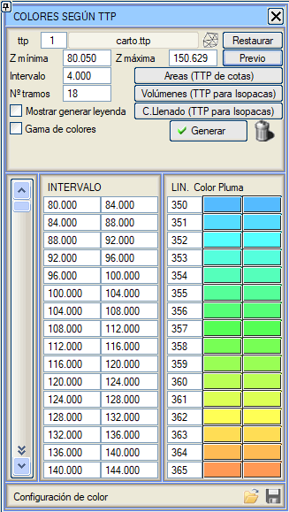
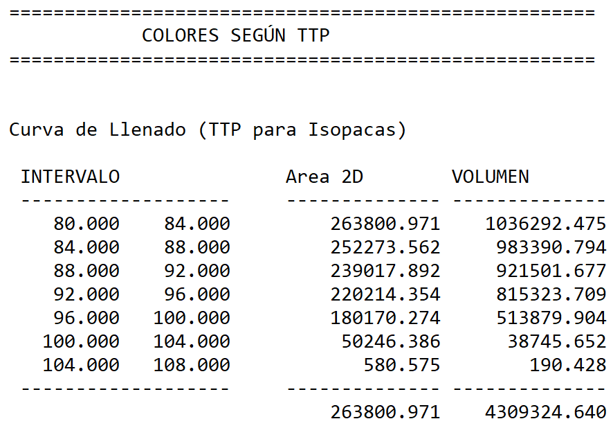
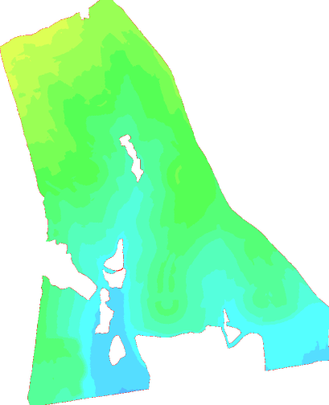
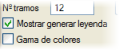
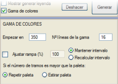

| |
|
SAM'A (TTP) GÖRE RENKLENDİRME
|
Bir üçgenleme (.ttp) dosyasından gelen kotlara göre bir renk haritası oluşturmayı sağlar. Renk haritası, bir *.edm dosyasına kaydedilebilecek çizgiler olarak oluşturulacaktır. 
İlk adım, üçgenlemeden gelen .ttp dosyasını,  kutucuğu aracılığıyla doğrudan erişebildiğimiz SAM kontrolü menüsünden yüklemektir. kutucuğu aracılığıyla doğrudan erişebildiğimiz SAM kontrolü menüsünden yüklemektir.Yüklendikten sonra, program otomatik olarak Minimum Z ve Maksimum Z'yi tanımlayacaktır. Bu değerler, daha sonra çizeceğimiz kot aralığını belirlemek için bizim kullanımımıza sunulacaktır. Önizleme kutucuğu aracılığıyla, belirlediğimiz farklı renklerle çizimimizin nasıl görünebileceğine dair dinamik bir görselleştirme elde ederiz. Kot değerlerine bağlı olarak program, daha sonra bir katı çizgi tipi tanımlayacağımız bir kot Aralığı belirler. Kot aralığını Kot Aralığı ile veya aralık sayısı ile belirleyebiliriz. Her iki seçenek de birbiriyle değiştirilebilir. *.ttp dosyası bir yüzeyin kotlarını temsil ettiğinde, her kot aralığı ve toplam için 2D ve 3D alanların bir listesi oluşturulabilir; bunun için Alanlar (Kot SAM'ı) düğmesine basmak gerekir. *.ttp dosyası kalınlıkları veya derinlikleri (izopaklar için ttp) temsil ettiğinde, her kalınlık aralığı ve toplam için 2D alan ve hacim listesi oluşturulabilir; bunun için Hacimler (İzopak SAM'ı) düğmesine basmak gerekir.
İzopaklar için bir SAM durumunda bir dolgu eğrisi hesaplamak için yeni bir yardımcı program eklenmiştir. *.ttp dosyası kalınlıkları veya derinlikleri (izopaklar için ttp) temsil ettiğinde, Dolgu Eğrisi (İzopak SAM'ı) düğmesine basıldığında bir dolgu eğrisi hesaplanır. Bu durumda, negatif ve pozitif aralıklar ayrı ayrı toplanır. Ayrıca, 2D alanların sıfırdan pozitif aralıklara ve sıfırdan negatif aralıklara doğru kümülatif olduğu da dikkate alınmalıdır. Örneğin, 10 ile 30 arasında kotları olan bir SAM'ımız varsa, 15 ile 16 arasındaki hacim için 2D alan, 15 ile 30 arasındaki tüm üçgenlerin 2D alanlarını içerir.  Her kot aralığı için katı çizgi tiplerini tanımladıktan sonra, renk haritasının çizimini Oluşturmaya hazır oluruz. 
  Oluşturulduktan sonra, Oluştur komutuyla çizime bir lejant ekleyebiliriz; metin tipini, Modeli veya kot kutusunda görünecek Başlığı değiştirebiliriz. Oluşturulduktan sonra, Oluştur komutuyla çizime bir lejant ekleyebiliriz; metin tipini, Modeli veya kot kutusunda görünecek Başlığı değiştirebiliriz.Renk Gamı komutundan, programa aralığımızın başlangıç çizgi tipini ve onu oluşturan çizgi sayısını belirtebiliriz. Aralıklarla ilişkili bilgileri Yükleyebilir veya Kaydedebiliriz. |